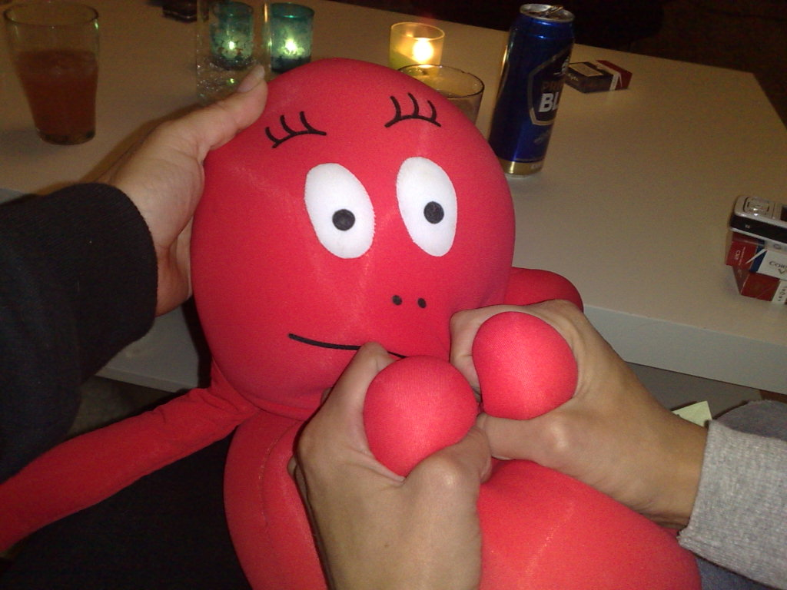
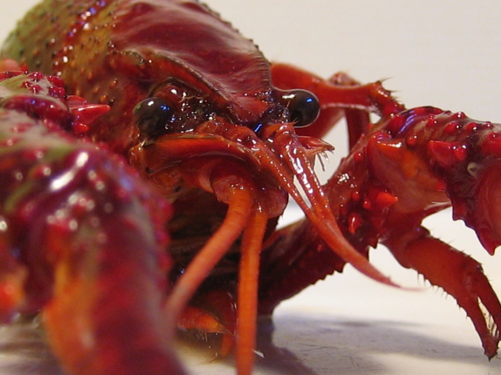

NO MOAR SOMMAR!
NU(asså
snart) ÄTER VI KRÄFTOR!

detta är inte en kräfta
kräfta:

Som traditionen bjuder så är det kräftätning på TBV
på en väl avvägd
FREDAG i slutet på augusti, enligt traditionen
är det jävligt nära nu asså.
ÅRETS GALNA NYHET!!
\o/ \o/
\o/
\o/
\o/
\o/
Livz levande
danzorkester!
Traditional Swedish crayfish
party Friday evening. Do not forget to bring your breaking
wheel and steglingsapparatur.
We'll
meet at Elm's and then find our way into the wilderness of
crayfish poking and breaking the shells of nature.
Thomas Sörensen KANSKE kommer förbi,
han har inte lovat nåt i år. Kände sig lite sliten.
http://familjen.su